Префектура Киото · Охара · еда
Вкус Охары: овощной рынок, два кафе у реки и курица сямо в старом доме
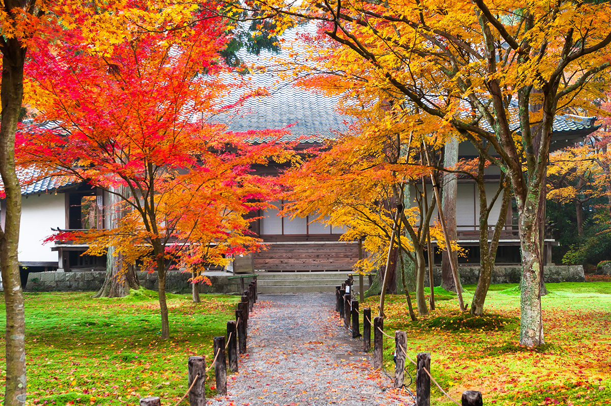
В горной деревне Охара когда-то укрывались от мира придворные эпохи Хэйан. Теперь сюда едут повара ресторанов со звёздами и молодые фермеры, которые выращивают органические овощи, а вокруг их урожая появляются новые кафе и рестораны.
Деревня
Охара: тихая сторона Киото
Охара лежит в глубине северной части Киото, у подножия горы Хиэй. Это одно из самых популярных мест в окрестностях города: сюда едут в любое время года, а осенью, когда краснеют клёны, народу особенно много. И всё же главное в Охаре это тишина и простота. Старый центр Киото изыскан и аристократичен, Охара деревенская и неспешная, и этот контраст здесь ценят больше всего.
Деревню со всех сторон обступают горы. Между рисовыми полями и огородами разбросаны крестьянские дома, и кажется, что они присматривают за урожаем. Многие японцы узнают в этом пейзаже ту самую Японию, которую представляют себе с детства.
При всей своей глуши Охара всегда была связана со столицей. Через неё шла дорога от Киото к провинции Вакаса на побережье Японского моря. Вакасу называли «микэцукуни», землёй, которая снабжала продуктами императорский двор. По этим дорогам в столицу везли скумбрию и другие дары моря, поэтому их прозвали «Саба-кайдо», дорогой скумбрии. Путей было несколько, и Охара стоит на главном из них, тракте Вакаса-кайдо.
Символом этих связей были «охарамэ», женщины из Охары: они носили на голове вязанки хвороста и продавали их на улицах Киото. Нынешняя слава Охары как места, где растут и собираются вкусные продукты, выросла из той же истории.
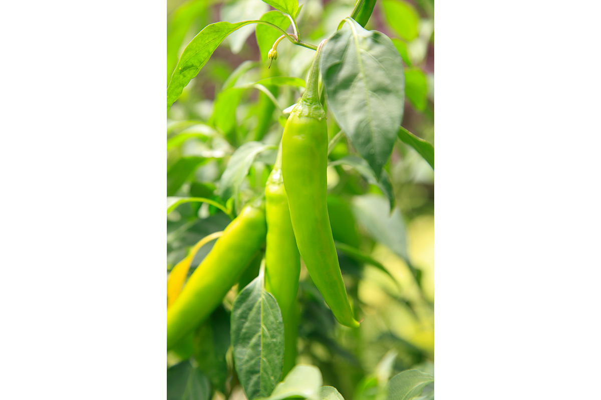
Рынок
«Сато-но эки Охара»: воскресный базар каждый день
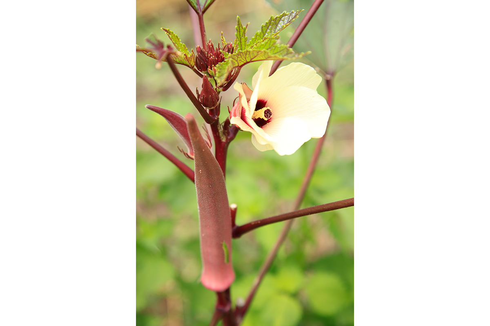
Овощи из Охары давно знают лучшие повара Киото. Говорят, что большая часть овощей, которые подают в известных ресторанах города, выращена именно здесь.
Больше двадцати лет назад один киотский писатель полтора года вёл хронику ресторана, который прославился блюдами, где главную роль играли не мясо и не рыба, а овощи. Хозяин этого ресторана постоянно ездил в Охару. Он бегал по деревне, как по собственному саду: сам собирал урожай и выпрашивал овощи у знакомых фермеров.
Каждое воскресенье в Охаре проходит утренний рынок. Едва открываются прилавки, приходит много людей, и среди них всегда были самые известные повара Киото. Писатель рассудил, что продукты, которые выбирают профессионалы, плохими быть не могут, и почти каждую неделю увозил домой горы овощей и полевых цветов.
«Сато-но эки Охара» похож на такой рынок, который работает каждый день. Один из фермеров за прилавком объяснил, почему здесь так хорошо растут овощи: Охара лежит в котловине, и разница между дневной и ночной температурой здесь большая.
Красная перилла, перец мангандзи, окра и другие сочные овощи Охары хороши и как подарок из поездки. А если хочется не только купить, но и поесть, в деревне есть заведения, которые готовят из местного урожая. О них ниже.
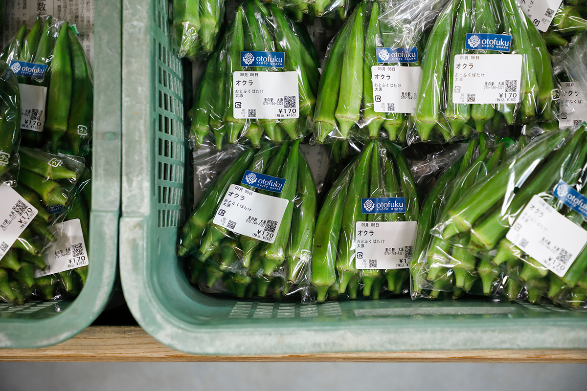
На рынке постоянно торгуют от 30 до 40 хозяйств, и все хозяйства привозят урожай прямо с грядки. Многие молодые люди переезжают в Охару, чтобы заниматься сельским хозяйством, поэтому выбор широкий: органические овощи, редкие европейские сорта. Особенно популярен воскресный утренний рынок. При рынке работает ресторан «Хана-мурасаки».
«Сато-но эки Охара»
- Адрес
- префектура Киото, город Киото, район Сакё, Охара Номура-тё, 1012
- Телефон
- +81 75-744-4321
- Часы работы
- рынок 9:00–16:00; ресторан «Хана-мурасаки» 9:00–15:30, обед 11:00–14:00 (последний заказ в 15:00), по воскресеньям с 7:30; воскресный утренний рынок 6:00–9:00
- Выходные
- понедельник (если это праздник, то вторник)
Кафе
Somushi ohara: пибимпап на десяти закусках
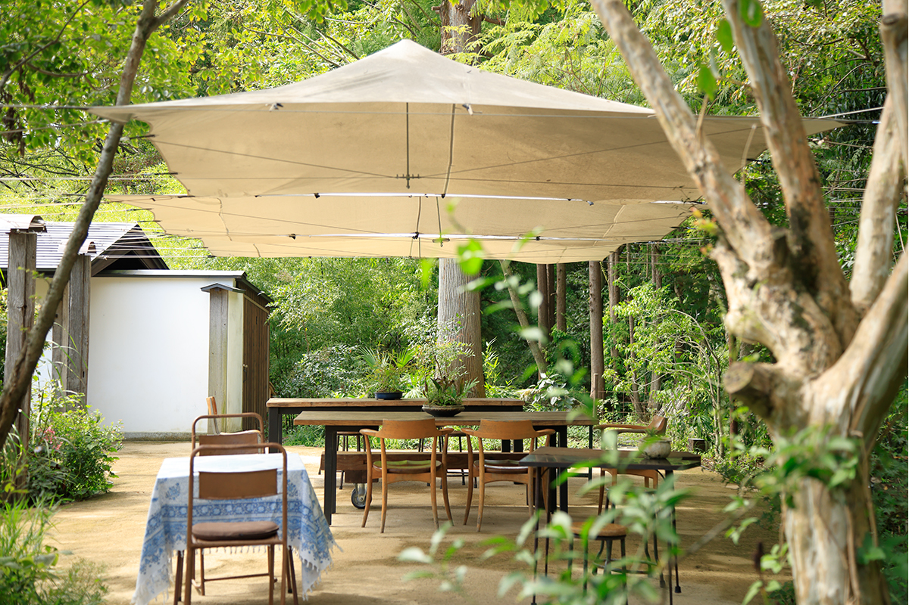
Somushi ohara стоит на полпути между храмами Сандзэн-ин и Дзякко-ин. Кафе переехало сюда из центра Киото в мае 2022 года и показывает, какими вкусными могут быть простые овощи.
Название пишется иероглифами, которые хозяйка толкует как «тень тайны природы, освобождённой от вещественного». Она давно любила овощи и природу Охары, и, по её словам, эти места подошли к названию лучше некуда.
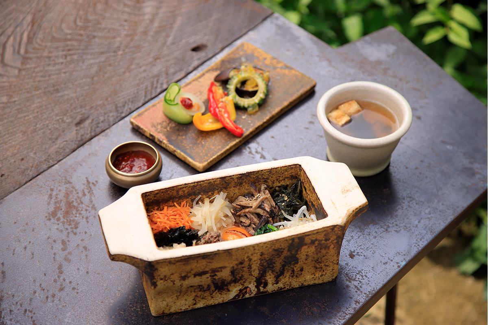
Главное блюдо кафе: «Somushi пибимпап». Здесь царит азиатская атмосфера, и рис подают с десятью тщательно приготовленными намулями, яйцом и мясом. Блюдо лёгкое, но очень сытное.
Вкусны в Охаре не только овощи. Рис для пибимпапа специально выращивает местный фермер, яйца несут куры, которые свободно гуляют здесь же, в деревне. Всё это выросло среди щедрой природы, и вкус у продуктов простой и чистый.
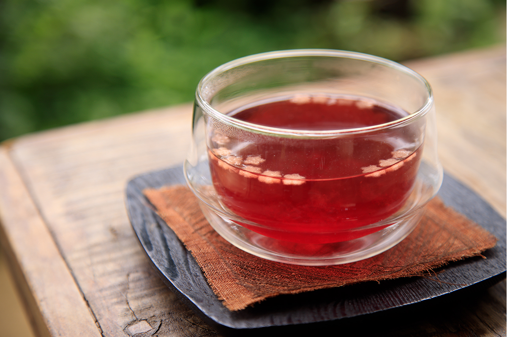
Мебель и корейская кухня напоминают об азиатской деревне, но кафе при этом совсем не выглядит чужим среди окрестных пейзажей. Так бывает только в Охаре.
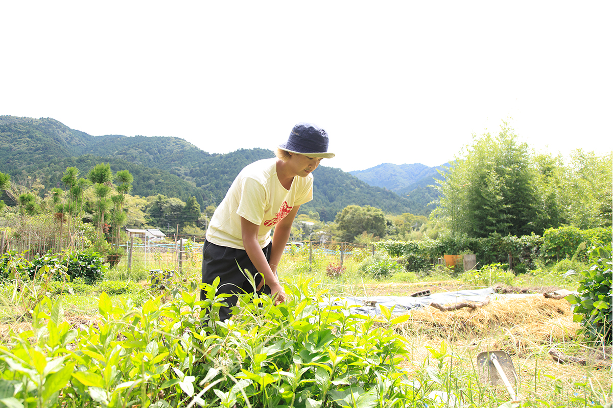
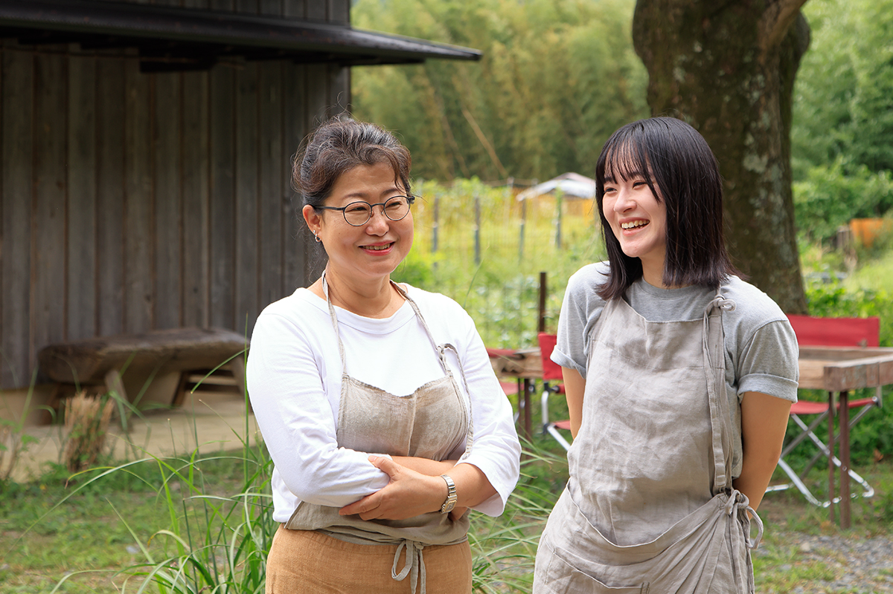
Восемнадцать лет кафе работало под другим названием в квартале Сандзё-Карасума в центре Киото и в Охаре начало заново. Холодные закуски к пибимпапу готовят из овощей с соседних полей и с собственного огорода, где их выращивают без пестицидов. Через огород кафе связано с землёй и передаёт гостям смену сезонов в Охаре.
Somushi ohara
- Адрес
- префектура Киото, город Киото, район Сакё, Охара Райгоин-тё, 118
- Телефон
- +81 75-205-1361
- Часы работы
- 10:00–16:00 (последний заказ в 15:30)
- Выходные
- понедельник, вторник, среда
Кафе
KULM: обед на одной тарелке
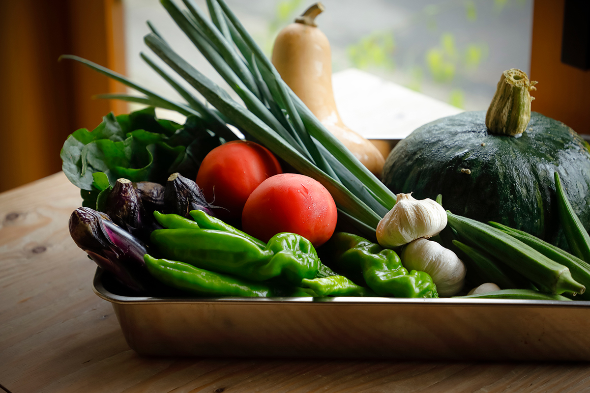
KULM стоит в двух шагах от автобусной остановки Охара и открылся в 2018 году. Здесь тоже популярны обеды из местных овощей.
Выбрать непросто. Можно взять пиццу дня с салатом из охарских овощей, пармской ветчиной, четырьмя сырами и мёдом, а можно обеденную тарелку.
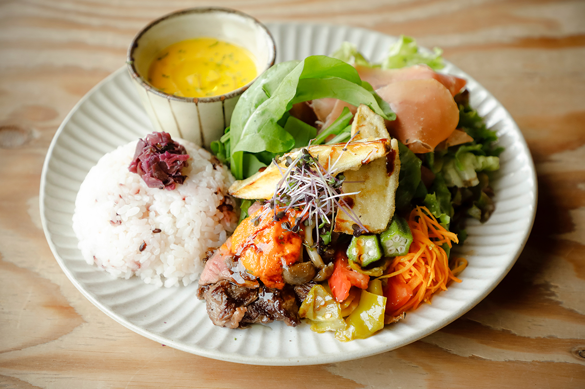
Состав тарелки меняется в зависимости от продуктов дня, но главное в ней всегда овощи. В тот день подавали морковный салат, баклажаны во фритюре и холодный тыквенный суп. Приправлено всё так тонко, что тарелку доедают даже те, кто овощи не любит.
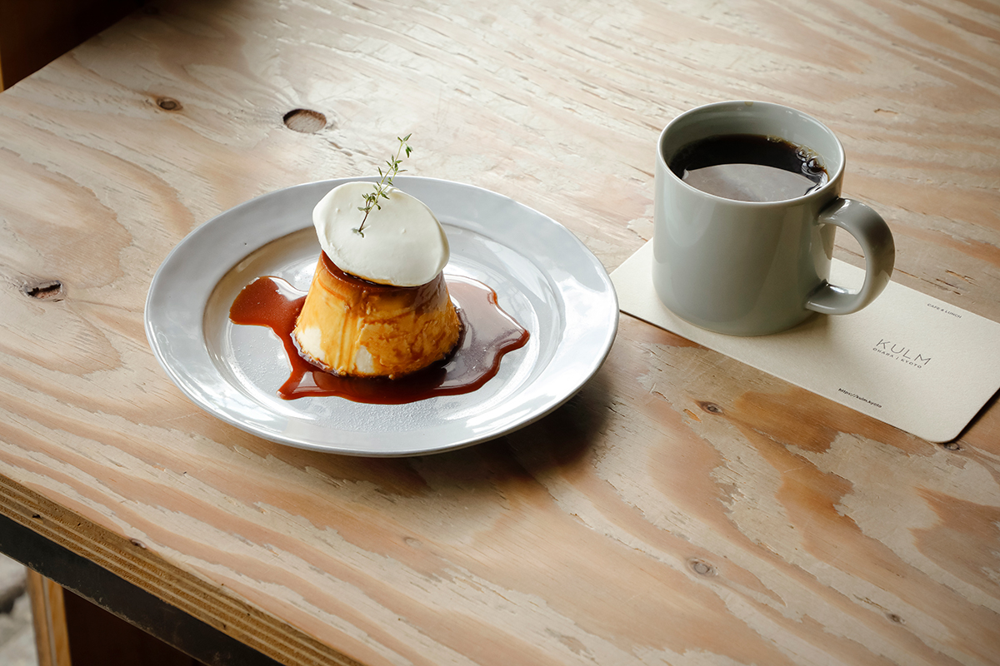
После обеда можно не спешить: заказать кофе из Восточного Тимора довольно тёмной обжарки и домашний десерт. За кафе течёт река Такано, перед ним лежат рисовые поля, и на этот мирный вид можно смотреть долго.
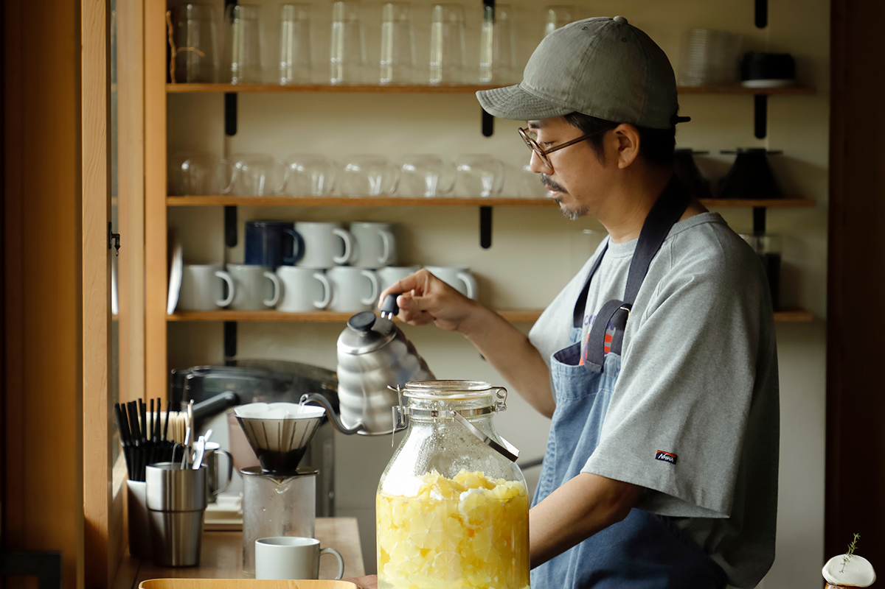
Хозяина привлёк простор этого места: позади река, впереди поля. Он сам пришёл договариваться с соседней лавкой солений и переделал её склад в кафе. Ему хочется, чтобы гости попробовали охарские овощи в самых разных блюдах, поэтому главное внимание здесь отдают обеду на одной тарелке.
KULM
- Адрес
- префектура Киото, город Киото, район Сакё, Охара Райгоин-тё, 117
- Телефон
- +81 90-9234-0770
- Часы работы
- 11:30–16:00, нужна бронь
- Выходные
- нерегулярно
- Сайт
- kulm.kyoto
Ресторан
«Номура сансо»: курица сямо и соба в старом особняке
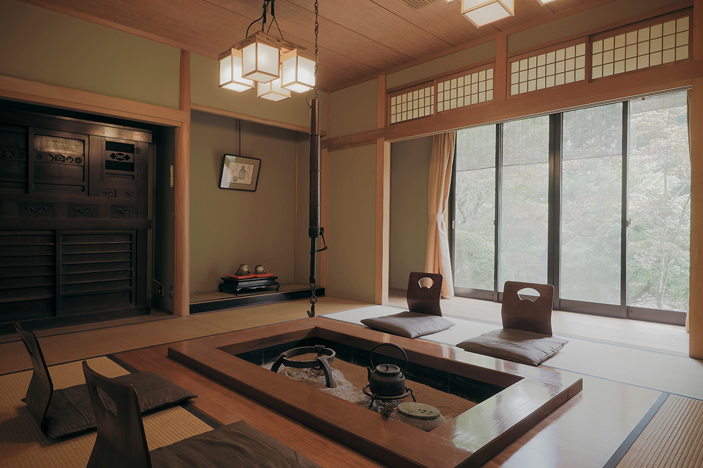
Меньше чем в десяти минутах ходьбы от рынка «Сато-но эки Охара» стоит «Номура сансо». Это ресторан японской кухни в большом доме, похожем на усадьбу, посреди просторного участка. Деревенскую, сытную и глубокую по вкусу кухню здесь ценят всё больше с каждым годом.
Комнат много, и все разные: с очагом ирори, большой зал с потолком из якусимского кедра. Но весной, осенью и в пору молодой листвы стоит попросить столик на террасе, которая выдаётся в сад, как сцена. Там просторно и свежо, а столик всего один и бывает только в сезон, поэтому бронировать его нужно заранее.
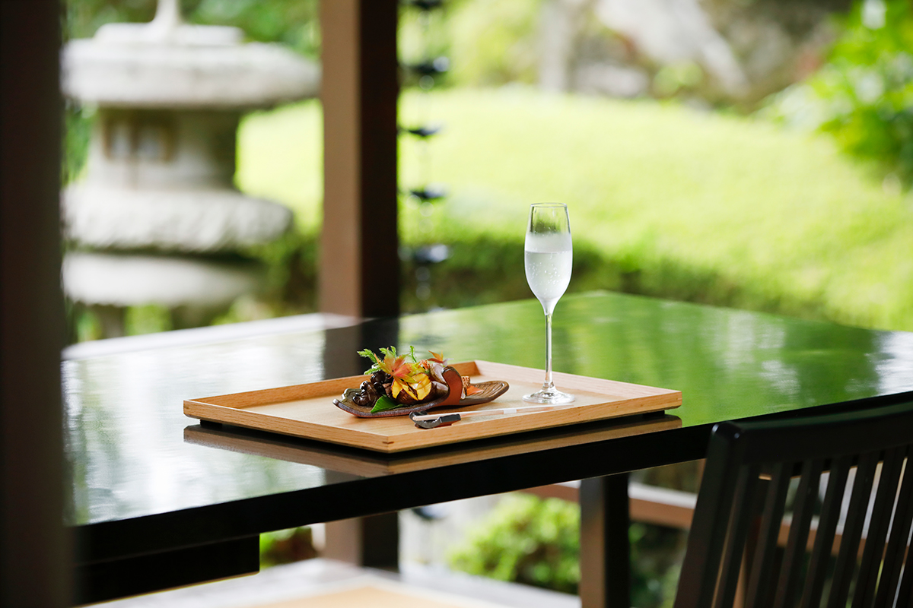
Главное здесь, конечно, еда. Это не наспех приготовленная кухня для туристов: такой уровень непросто найти даже в центре Киото.
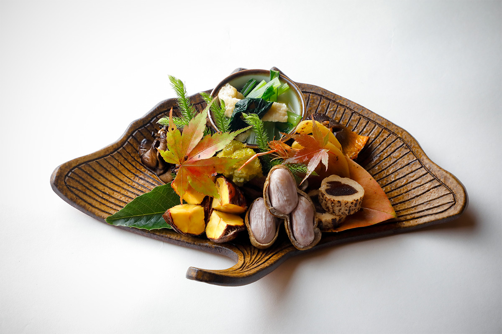
Хассун, набор закусок, соединяет деревенскую простоту с изысканностью столицы и радует и глаз, и язык. На подносе собраны осенние вкусы: сайра, каштаны, хурма, чёрные майтакэ.
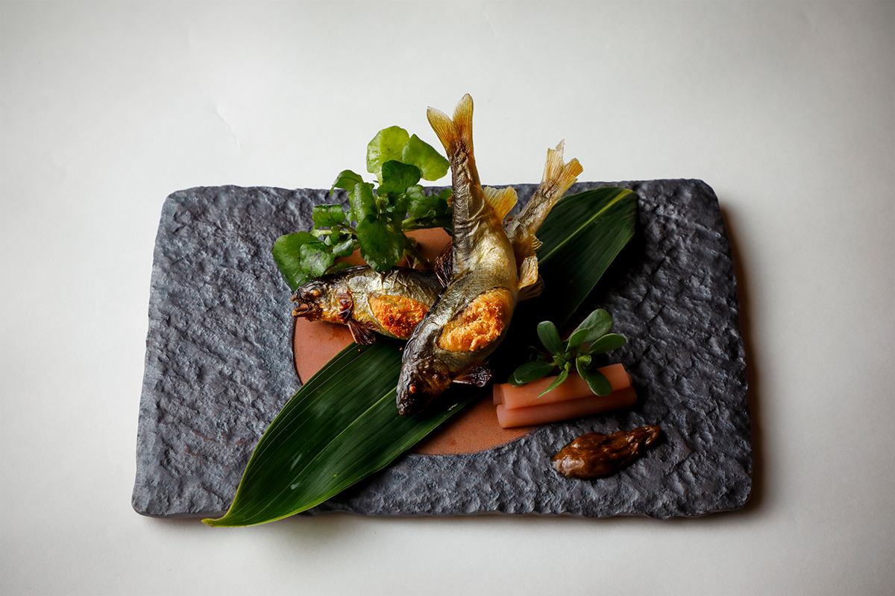
Затем подают аю с икрой, жаренную с солью, на посуде, которую хозяин сделал своими руками. За ней приходит черёд фирменного блюда, «онабэ-датэ», маленького котелка на каждого гостя. В тот день в котелке была курица сямо.
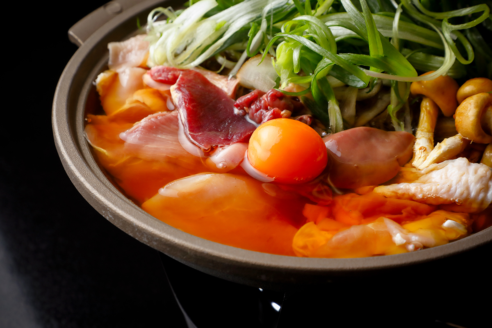
В котелке можно попробовать разные части курицы. Лопух добавляет вкус, аромат и хруст, и блюдо получается по-деревенски сытным.
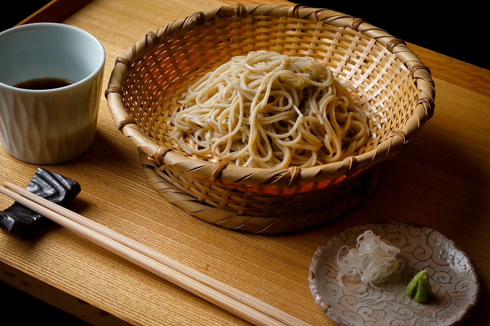
Завершает обед соба дзювари, которую хозяин сам раскатывает и режет из чистой гречневой муки. В тот день мука была с Хоккайдо. Осень считается лучшим временем для собы, а в горной деревне она кажется ещё вкуснее.
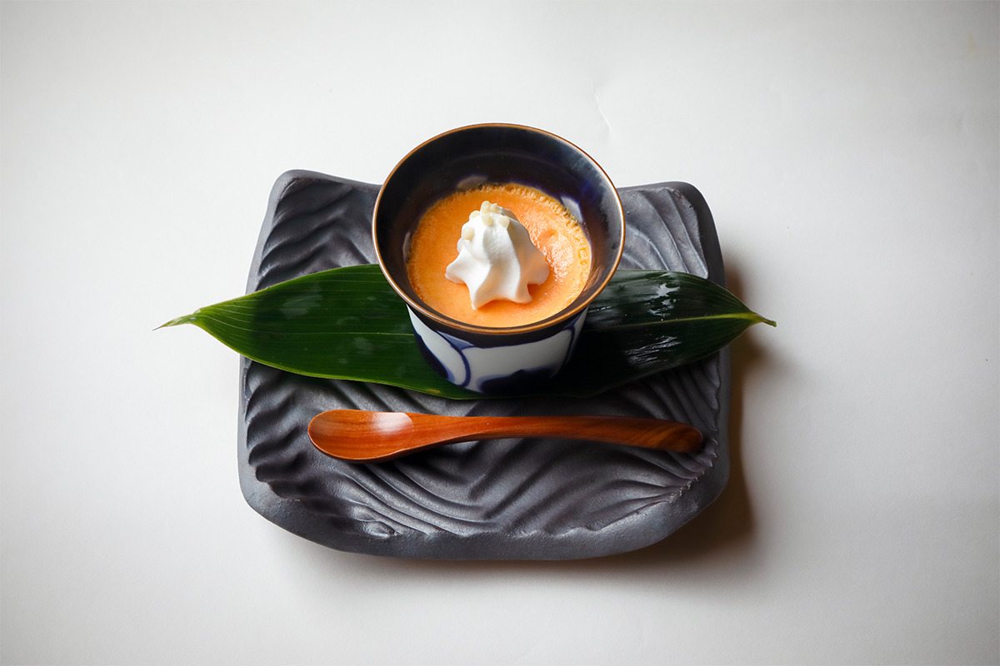
Дом построил в начале эпохи Сёва (1926–1989) торговец кимоно из семьи, которая вела дело с эпохи Эдо. Нынешние хозяева получили особняк и перенесли его в Охару. Кроме сямо здесь зимой готовят маленькие котелки с дичью: кабаном и медвежатиной. Второе поколение семьи работало в известном киотском ресторане, где готовят из дикорастущих трав, и теперь в меню есть блюда из собранных в горах растений.
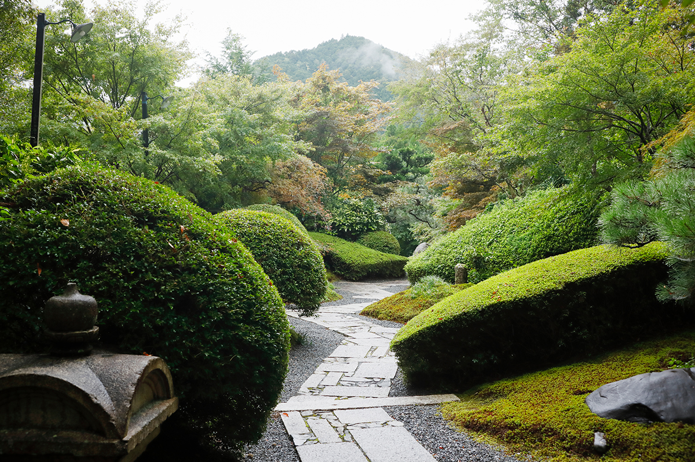
По обе стороны тракта Вакаса-кайдо в Охаре стоят два известных старинных храма, Сандзэн-ин и Дзякко-ин. Охара не только деревня вкусной еды, но и место молитвы.
«Номура сансо»
- Адрес
- префектура Киото, город Киото, район Сакё, Охара Номура-тё, 236
- Телефон
- +81 75-744-3456
- Часы работы
- обед 12:00–15:00, ужин 17:30–21:00
- Выходные
- четверг
Фото: Макото Ито, Кацухико Мидзуно.